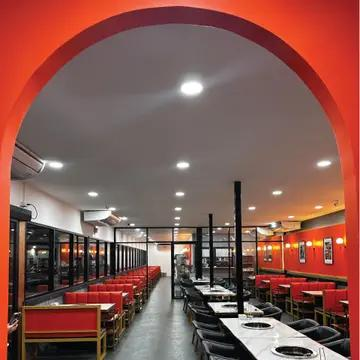
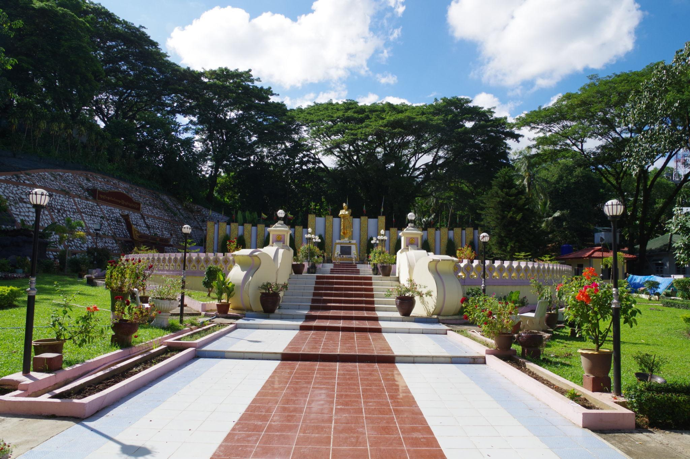

Welcome to the Tachileik Guide!
Explore the beauty of Tachileik with our comprehensive guide.
.svg)
Weather
Loading...
Loading...
.svg)
Local Time
Tachileik
--:--

Places to Hang Out
Find your favorite places to relax, grab a bite, and enjoy good times with friends. Explore Tachileik's cafés, restaurants, and local hangout spots.

Pagodas / Monasteries
Explore Tachileik's beautiful pagodas and monasteries, where golden stupas, stunning architecture, and rich cultural heritage create unforgettable sights.

Local Markets
Discover the vibrant local markets of Tachileik, filled with fresh produce, everyday essentials, local delicacies, and lively street vendors.

Restaurents
Discover Tachileik's dining scene, from cozy cafés to local restaurants serving delicious food and refreshing drinks.

Parks
Enjoy Tachileik's outdoor spaces, with peaceful greenery, open areas, and relaxing spots to unwind.

Pools
Take a refreshing break at Tachileik's swimming pools, perfect for cooling off, relaxing, and enjoying a splash of fun.